Table of Contents
What is Interaction Design?
Interaction design is about making technology feel human and bridge the gap between you and your device, turning complex computer actions into simple actions like tapping a button. By anticipating mistakes like typos or forgotten passwords it ensures tools are forgiving and easy to use. Ultimately, it designs products that fit naturally into your life, so you can accomplish your daily tasks without ever fighting with a screen.
HCI Process Lifecycle Model
The Human-Computer Interaction (HCI) process follows an iterative lifecycle that ensures user needs remain central throughout design and development. The key stages are: Requirements (understanding user needs), Design (creating prototypes), Development (building interfaces), Implementation (deploying to users), Evaluation (user testing), and Refinement (iterate based on findings).
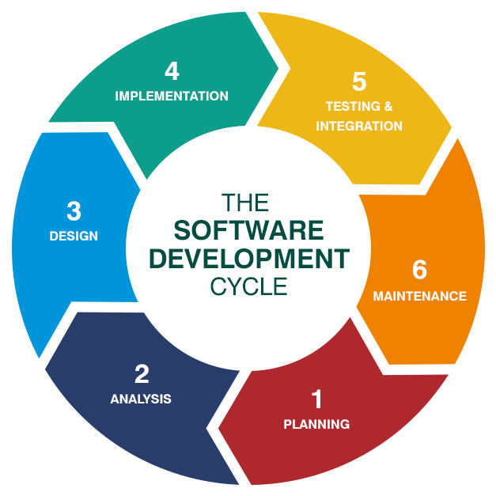
Why Journal?
- To have a documented creative process
- A journal gives you a place to write down feedback immediately.
- A journal is private or low stakes. You can draw terrible sketches or write potentially bad ideas for a project. Often, the best innovative ideas come from editing a "bad" idea that you felt safe enough to write down.
Reflective Journaling
Reflective journaling in interaction design serves as a powerful tool for professional development and learning. According to Schön's (1983) work on reflective practice, designers engage in "reflection-in-action" while working and "reflection-on-action" after completing tasks. This journal serves as a space for the latter, allowing me to examine my design decisions and learning progress.
Academic research supports the value of reflective journaling in design education. Moon (2006) argues that journal writing enhances learning by encouraging deeper cognitive processing and helping students make connections between theory and practice.
Lab 1 - HTML Basics
- Created this journal
- HTML basics, made extremely small webpage with h1, h2, and p tags
- Looked through slideshow about what you want in design and what is a good design vs what is a bad design
Reflection: This initial lab helped me understand that interaction design is not just about aesthetics but about creating functional, intuitive experiences. The HTML exercise showed me how even basic structural elements contribute to a page's usability and accessibility.
Lab 2 - CSS and Colour
Today we:
- Learned how to make ordered and unordered lists
- Implemented colours into the website
- Learned how to move text into the middle and to the right side
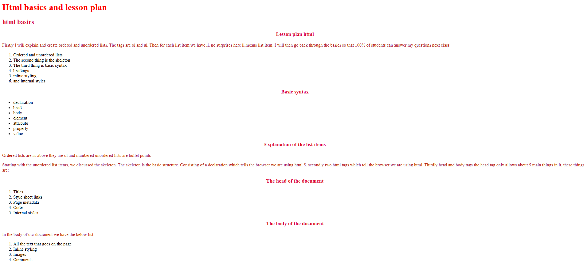
- We did some Photoshop fundamentals and practised
Reflection: This lab demonstrated the connection between code and visual output. Understanding how CSS properties translate to visual design helps me appreciate the importance of separating structure (HTML) from presentation (CSS). The Photoshop introduction showed me how graphic design skills complement web development.
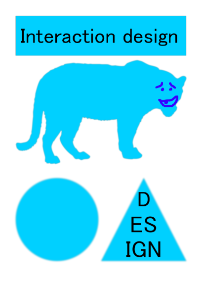
W3 Schools Walk-through Study
As part of my self-directed learning, I have been working through W3 Schools tutorials to build a stronger foundation in HTML and CSS. Key topics covered include:
- HTML Elements - Learned semantic HTML for accessibility and SEO
- CSS Selectors - Understanding cascade and specificity
- Box Model - Content, padding, border, margin fundamentals
- Colour Properties - Hex codes, RGB/RGBA, named colours
Lab 3 - UX/UI Theory
The Difference Between UX and UI
- UX stands for user experience and is very heavily focused on how a website feels - is it easy, efficient and enjoyable to use.
- UI stands for user interface and is all about how the website looks.
- So, if UX is the architecture of a house, UI is the interior design and styling.
These two disciplines work together closely - a beautiful interface (UI) cannot save a confusing user journey (UX), and the best user experience needs an attractive interface to engage users effectively.
Interface Metaphors
- The trash bin on computers is a very good example of a metaphor because it makes deleting a file just like throwing a piece of paper in the garbage.
- The shopping cart at website checkouts is another metaphor for pushing a cart to the checkout just like in a real store.
Desktop and folders metaphors help users organize digital files similarly to physical documents, making file management intuitive. These metaphors reduce the learning curve for new users by connecting digital concepts to familiar real-world objects.
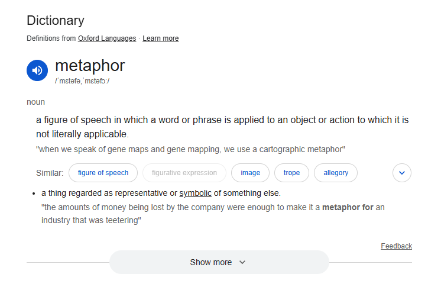
Examples of Bad Designs
Pop-up Ads
These interrupt the user's flow and force them to hunt for a tiny close button, often leading to accidental clicks. They prioritise advertiser goals over the user's experience.
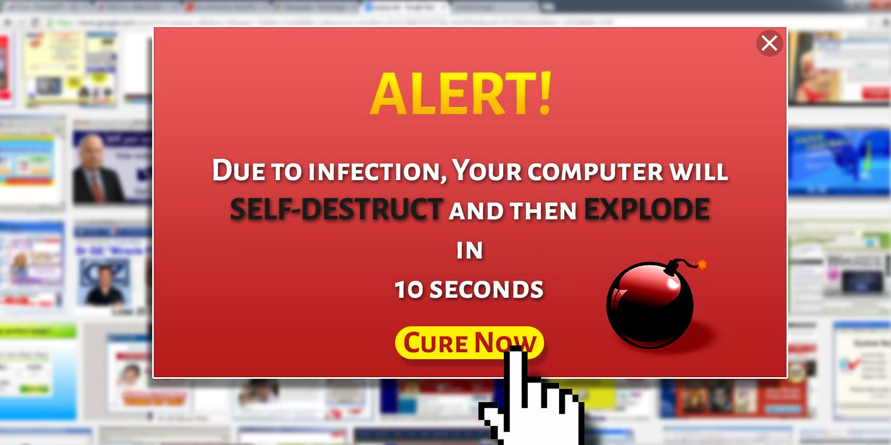
Windows 8 Start Screen
Removed the familiar Start button that users had relied on for nearly 20 years. People couldn't easily find applications or shut down their computers, forcing Microsoft to bring back the button in later versions.
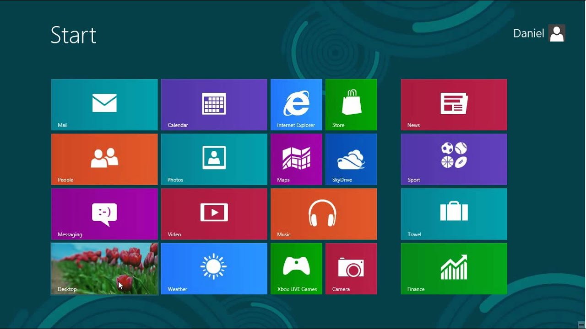
Non-descriptive Error Messages
Messages like "An error occurred" or "Error code: 0x80070005" leave users confused about what went wrong or how to fix it, with no clear path forward.
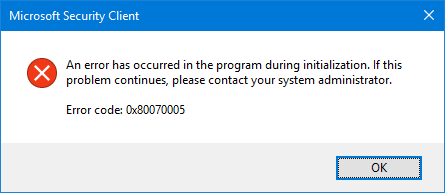
Examples of Good Designs
Good design prioritizes clarity, usability, and user satisfaction. Examples include:
Google's Homepage
The minimalist design with a single search field demonstrates focus on the primary user goal. White space guides attention to what matters most.
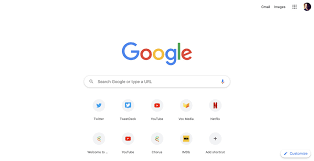
iPhone Interface
Consistent gestures, clear iconography, and intuitive navigation make complex technology accessible to users of all skill levels.
Spotify
The dark theme reduces eye strain during extended use, while personalized playlists help users discover content efficiently.
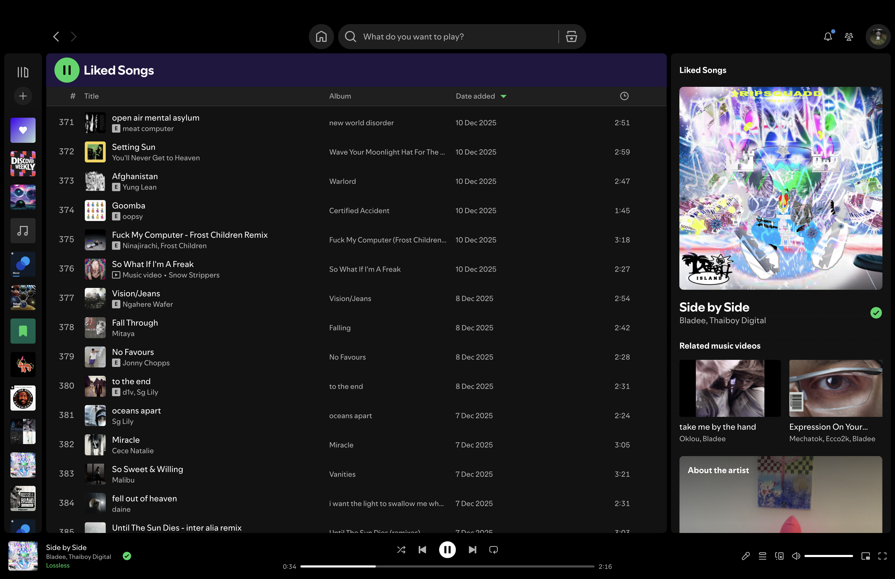
Key principles these examples demonstrate: clear visual hierarchy, consistent design patterns, immediate feedback on user actions, and designs that anticipate user needs.
Graphic Design Principles
Understanding graphic design principles is essential for creating visually effective interfaces:
| Principle | Description and Application |
|---|---|
| Hierarchy | Using size, colour, and position to indicate importance. |
| Contrast | Differences between elements create visual interest and improve readability. |
| Alignment | Elements should align with each other to create visual connections and organize information. |
| Proximity | Related items should be grouped together to ease access for the user. |
| White Space | Empty space improves readability and reduces cognitive load. |
W3 Schools Website Analysis
| Webpage | Initial thoughts | Problems | Solution suggestion |
|---|---|---|---|
| HTML Home | Nice layout, very clean and sleek. Crazy exercise at the bottom of the page. | The video tutorial is at the bottom. There is an exercise on the page that hasn't been taught yet (Links). | Move the video to the top. Include a tutorial for links later, on a different page and put the exercise there. |
| HTML Intro | Nothing special, good layout. | The same video tutorial is at the bottom. | If the video is on the other page at the top, then completely remove the video. |
| HTML Editors | None, it's the same as all the others the layout is generally very consistent. | The video for this page is at the bottom. | Move video to the top. |
| HTML Basic | This one has an exercise at the bottom, which is where it should be. | No problem, it's very nice. | 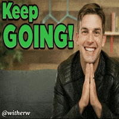 |
| HTML Elements | Looks very similar with a seemingly out of place yellow single line of text. | There is a yellow line of text that is ugly and seems to be laid out improperly. | Yellow (specifically this shade) looks off, I feel green would suit better (before): 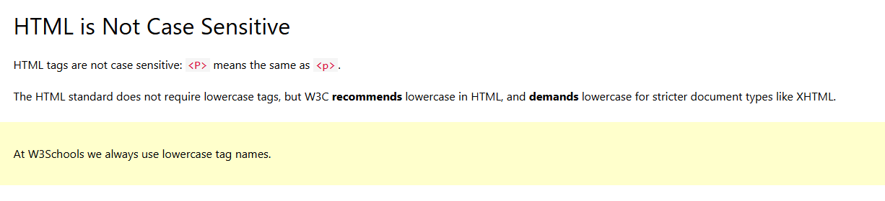 (after): 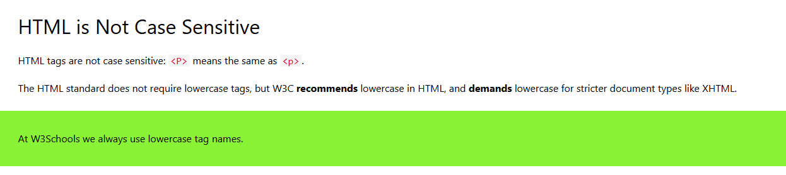 |
| HTML Attributes | This webpage is consistent with the other ones and functions well in the ways it needs to. | ||
| HTML Headings | This webpage is consistent with the other ones and functions well in the ways it needs to. | ||
| HTML Paragraphs | This webpage is consistent with the other ones and functions well in the ways it needs to. |
Lab 4 - Website Design
In this lab we designed a website and this was how mine turned out, we were encouraged to play around with the HTML and CSS to make it look visually pleasing instead of the barebones designs that we were doing previously.
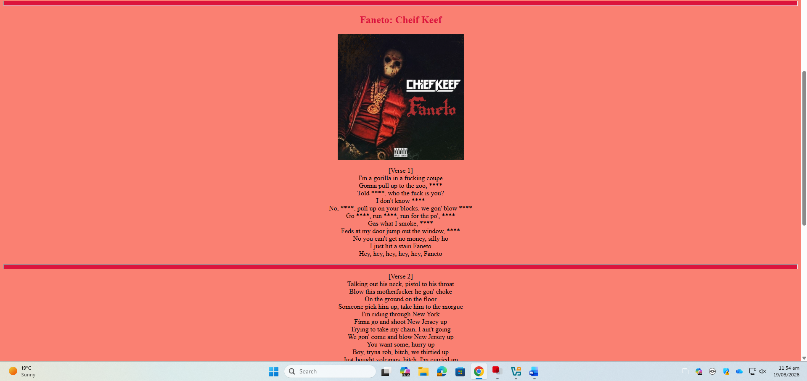
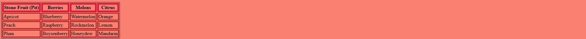
Lab 5 - UI Elements and Divs
Today for this lab the class worked on UI Elements and Principles of Design to get a better understanding of the principles of design. Working on UI elements and principles of design in a lab setting is highly helpful because it transforms abstract concepts into practical skills, bridging the gap between theoretical knowledge and real-world application.
We also learned how to do div and put divs into the webpage using HTML.
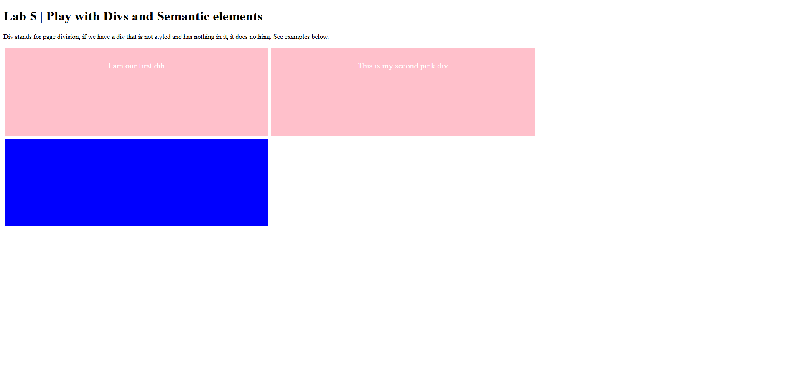
Terrible Website Examples
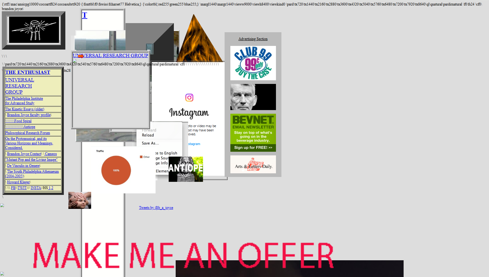
lifeactionrevival.org
This website is very terrible, but it seems it is that way on purpose. Everything is cluttered and non-uniform, and the background is dull and grey but at the same time I think personally this website doesn't have so much that it's too stimulating and the colours are all quite similar, with a colour palette of mostly grey with some other low profile colours like brown, orange, beige and a deep green. This website is quite calming if you can get past the terrible layout design, I think the colours are quite tranquil. I think this website was made intentionally poorly by a graphic designer and even though this website is conventionally ugly it seems it is very well thought out.
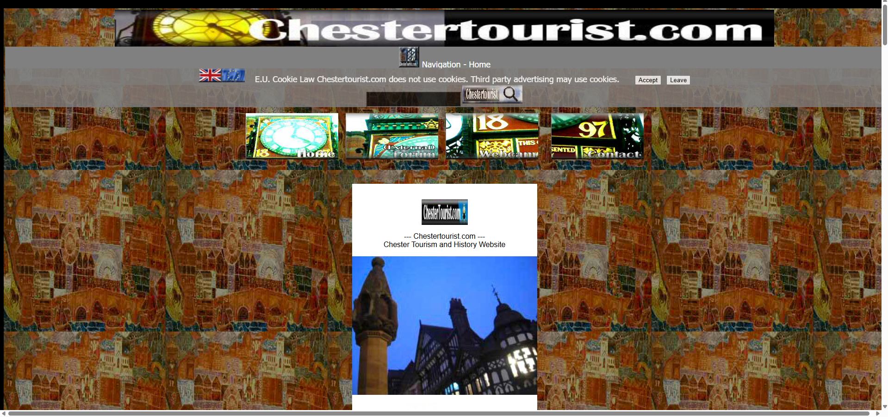
chestertourist.com
Chestertourist.com is a terrible, non-functional website ruined by a completely cluttered and non-uniform layout. Visually, it is overwhelmingly ugly, anchored by a dull, lifeless grey background and a flat colour palette consisting only of similarly muted shades like brown, orange, beige, and deep green. Because everything is thrown together so haphazardly without any clear visual hierarchy or contrast, the site completely fails at being readable or being easy to engage with and navigate, leaving you with a chaotic mess that is ugly and hard to navigate.
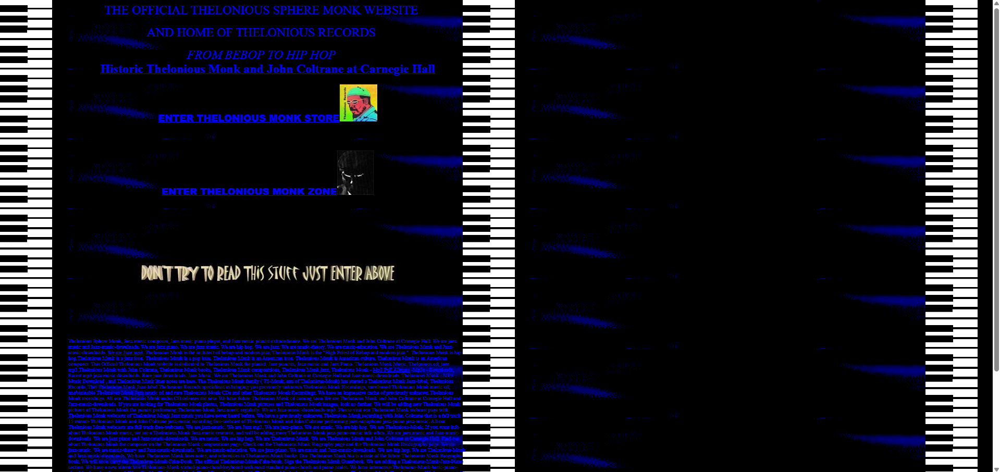
monkzone.com
Monkzone.com's index page is a wall of rambling, repetitive text stuffed with awkward, keyword-heavy phrases ("we are jazz mp3... jazz-music-downloads... we are hip hop...") instead of clear navigation or information. The layout is bare and confusing, with the homepage offering only a couple of unlabelled links ("ENTER THELONIOUS MONK ZONE," "ENTER THELONIOUS MONK STORE"), and even those lead to sparse, dated pages that feel unfinished and hard to scan. Between the SEO-spam style copy, the lack of visual hierarchy, and the overall early-2000s aesthetic, the site looks messy and unwelcoming and barely functions as a usable fan or store hub.

arngren.net
Arngren is a complete clutter of visual noise! This while having lots of things on the homepage which is already a questionable decision, it also poorly categorises these products and in the screenshot you can see the "el-fatbike Foldable" category being off centre near the middle slightly to the left with the column going all the way from the bottom but not going up to the top. There are so many questionable design decisions made on this site such as terrible space management, and even things like the logo on the site changes red and becomes weird and almost unrecognisable to look at.
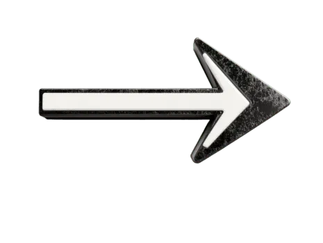
Great Website Examples
floor796.com
Floor796 excels in interaction design by transforming a dense and static canvas into a dynamic as well as explorable ecosystem through intuitive affordances and layered multisensory feedback. The interface encourages active participation by ensuring that nearly every element, ranging from background characters to obscure objects, responds to user input with meaningful rewards such as identifying pop culture references, triggering hidden audio, or initiating mini games. By balancing seamless spatial navigation with progressive discovery through quests and Easter eggs, the site fosters a deep sense of agency and immersion, allowing users to engage as active participants rather than passive observers within a continuously evolving world. It's also really nice how the website is regularly updated, with the last update being 3 days ago and the last time the website was updated being displayed in the top right corner.
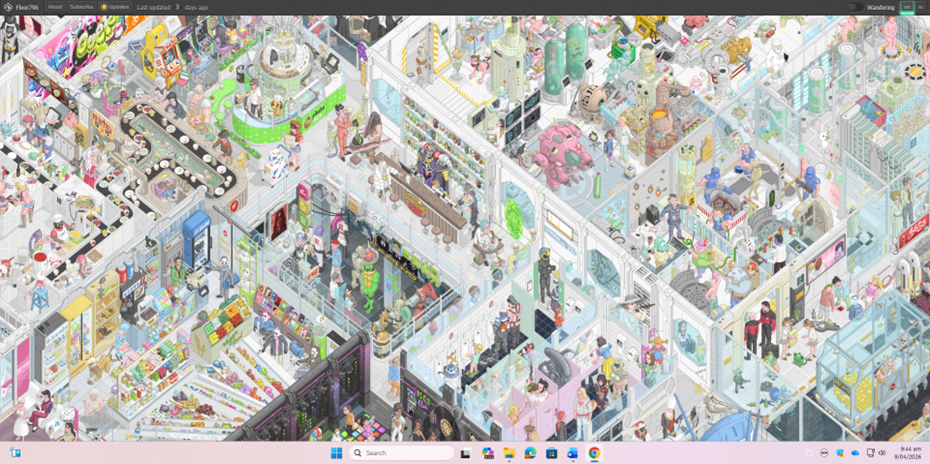
Jakob Nielsen's 10 Usability Heuristics Compared to Windows File Explorer
Visibility of System Status
Definition: The system should always keep users informed about what is going on, through appropriate feedback within reasonable time.
Example in Windows File Explorer: The address bar shows your current path (where you are), and a progress bar appears when copying or moving files, and search results update as you type so you always see where you are and what's happening.
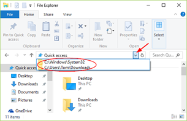
Match Between System and the Real World
Definition: The system should speak the user's language, with words, phrases and concepts familiar to the user, rather than system-oriented terms. Follow real-world conventions, making information appear in a natural and logical order.
Example in Windows File Explorer: It uses everyday terms like "Desktop," "Documents," "Pictures," and "Downloads," and actions are labelled simply as "Cut," "Copy," "Paste," "Share," and "Delete," matching how people naturally talk about files (to be fair it probably played a large part in shaping how people talk about files because it has been around for so long).
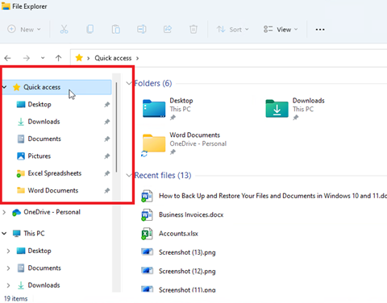
User Control and Freedom
Definition: Users often choose system functions by mistake and will need a clearly marked "emergency exit" to leave the unwanted state without having to go through an extended dialogue. Support undo and redo.
Example in Windows File Explorer: You can undo a move or copy with Ctrl+Z, and if you change your mind while dragging files you can press Esc to cancel the operation.
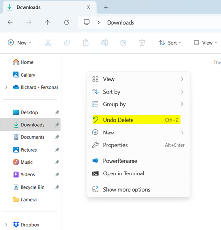
Consistency and Standards
Definition: Users should not have to wonder whether different words, situations, or actions mean the same thing. Follow platform conventions.
Example in Windows File Explorer: Standard controls appear consistently across folders (Back/Forward, Up, Search in the top area), and common commands like Cut, Copy, Paste, Rename, Delete use the same labels and keyboard shortcuts as elsewhere in Windows.
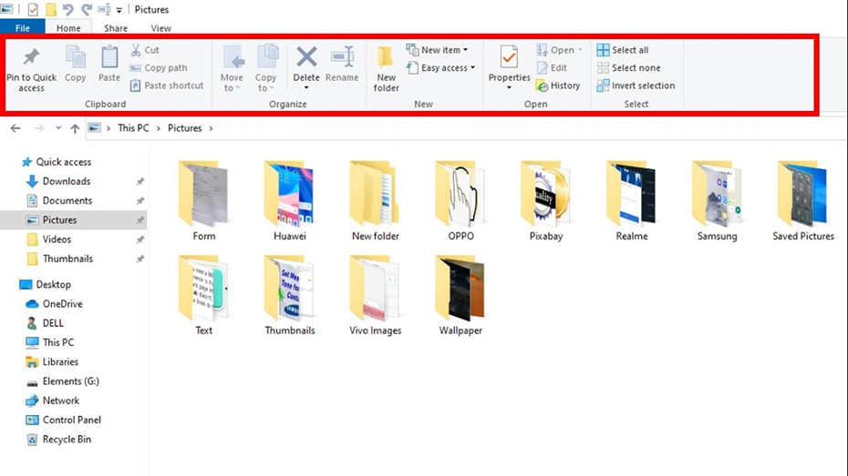
Error Prevention
Definition: Even better than good error messages is a careful design which prevents a problem from occurring in the first place. Either eliminate error-prone conditions or check for them and present users with a confirmation option before they commit to the action.
Example in Windows File Explorer: When you try to copy a file to a folder where a file with the same name already exists, File Explorer shows a clear "Replace or Skip" dialog with details so you can avoid accidentally overwriting important files.
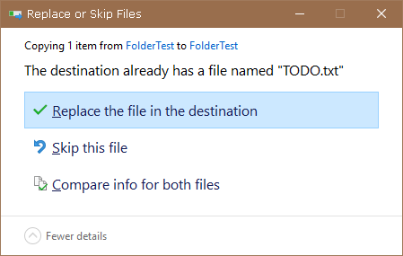
Recognition Rather Than Recall
Definition: Minimize the user's memory load by making objects, actions, and options visible. The user should not have to remember information from one part of the dialogue to another. Instructions for use of the system should be visible or easily retrievable whenever appropriate.
Example in Windows File Explorer: Common commands are placed in the ribbon/command bar and context menu (Cut, Copy, Paste, Share, Delete), and navigation options stay on screen, so you can recognize and choose actions instead of memorizing them.
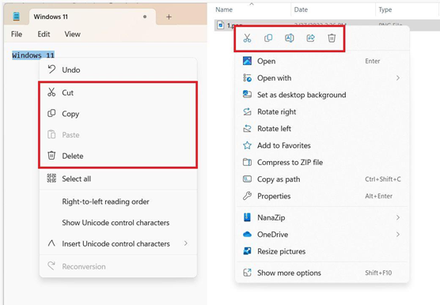
Flexibility and Efficiency of Use
Definition: Accelerators - unseen by the novice user - may often speed up the interaction for the experienced user such that the system can cater to both inexperienced and experienced users. Allow users to tailor frequent actions.
Example in Windows File Explorer: You can browse with the mouse or use shortcuts like Windows+E to open File Explorer quickly, Ctrl+C/V to copy/paste, and F2 to rename items, making repeated tasks much faster for experienced users.
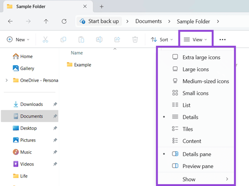
Aesthetic and Minimalist Design
Definition: Dialogues should not contain information which is irrelevant or rarely needed. Every extra unit of information in a dialogue competes with the relevant units of information and diminishes their relative visibility.
Example in Windows File Explorer: The default view hides extra clutter, focusing on the file list and key controls (navigation pane, address bar, search box), with optional elements like the Preview/Details pane shown only when you choose them.
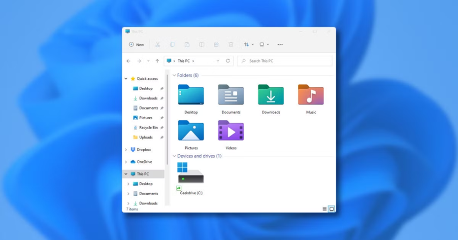
Help Users Recognize, Diagnose, and Recover from Errors
Definition: Error messages should be expressed in plain language (no codes), precisely indicate the problem, and constructively suggest a solution.
Example in Windows File Explorer: If a file can't be moved because it's in use or you don't have permission, the dialog tells you which file is involved and often what's wrong so you can close the app or change permissions and try again.
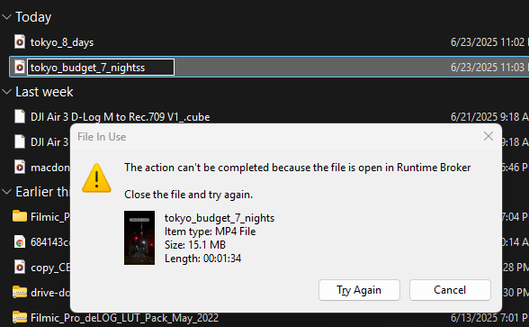
Help and Documentation
Definition: Even though it is better if the system can be used without documentation, it may be necessary to provide help and documentation. Any such information should be easy to search, focused on the user's task, list concrete steps to be carried out, and not be too large.
Example in Windows File Explorer: Selecting "Help" in the menu or searching online opens Microsoft's File Explorer support page with step-by-step instructions for pinning folders, using Quick access, sharing files, and customizing views. Microsoft has a lot of help available to users.
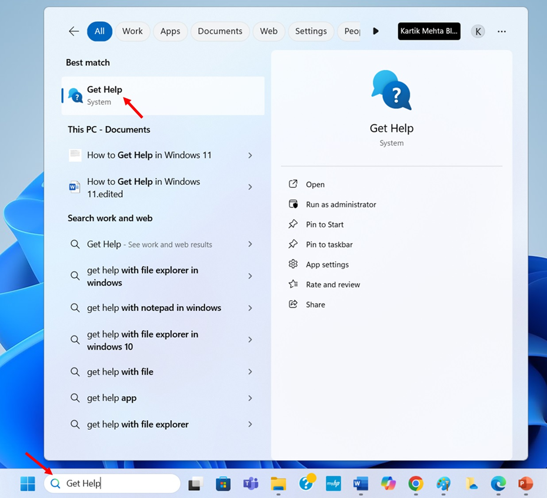
References
- Moon, J. A. (2006). Learning Journals: A Handbook for Reflective Practice and Professional Development. Routledge.
- Schön, D. A. (1983). The Reflective Practitioner: How Professionals Think in Action. Basic Books.
- W3 Schools. (2024). HTML and CSS Tutorials. https://www.w3schools.com/